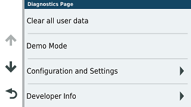
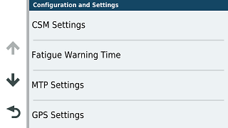

Install program
Note: If a pre V1.5 version is installed on a
64 bits system, you will be prompted to uninstall that version
before continuing. You will not lose your settings.
|
Click on Speed
|
Long press Circle ‘0 km/h’
|
|
Configuration and Settings
|

MTP Settings
|
|

Check Show .System
|
|
Verify communication with the Device
· Connect the XT(2) to Windows.
· A
supported device should be selected automatically, when
connected. See here for a list of supported
models.
· The
model (XT, XT2, Tread 2 etc) is selected automatically from the
connected device. But you can override it, for example when no
device is connected, but you want to create trip files for a
specific model.
· Verify that the 3 presets point to the folder of your
choice on the device. Trips, Gpx and Poi (Gpi) If
an SD Card is installed you may want to use that for Gpx and
Gpi files. To change that navigate to the correct folder and
click on Set as default.
Overview of Settings
In Advanced/Settings you can find most
settings that TripManager stores in the registry.
For most settings TripManager has sensible
default values, to revert to that default, simply clear the
value and click on OK.
Used in Compare and Fixing:
CompareDistOK For every point in the
trip it should find a corresponding (closest) point when
compared with a route, or track. Here you specify a treshhold
value.
MinShapeDist Used when automatically
fixing a trip. To control the number of shaping points
TripManager will keep this distance between added shaping
points.
MapTilerApiKey To get more base layers
in the map you need an api key from maptiler. See:
Hex/OSM
Window (at the bottom)
Device settings
Expert options. Use with care!
EnableDirDuncs Setting this to true,
will enable you to create and delete folders on the device.
TripManager can not guarantee safe operation.
EnableExploreFuncs Only applicable for
the XT2 and Tread 2 models. See Check Explore
db
GPISymbolsSize Specifies the size of
the symbols used when creating GPI files. For devices with a
low-res screen (Zumo 220, 660 etc) 24x24 is recommended. For
high-res (Zumo XT(2) etc) you can set 80x80.
GPIProximity If there is no Proximity
in the GPX file for a point to add in the GPI file, you can set
a default here. If you dont want any proximity warnings, make
sure that it is not in the GPX, and set this value to 0.
Zumo settings
AllowGrouping Only for XT. By default
all routes in the same GPX, will be shown grouped in the Trip
planner, when transferred with Send To, option 'Trips'. Here
you can override that.
For other models this has no effect.
DefAdvLevel The XT2 and Tread 2 are
able to set the route preference per route segment. (Part of
the route between via points) TripManager uses the value
<trp:CalculationMode> in the GPX to store that info in
the trip file. For Adventurous also a
<trp:AdventurousLevel> should be specified. When
this value is not available TripManager uses this as a default
value.
When opening a Trip or GPX in Kurviger,
TripManager uses these settings as default values.
(Expert option)
EnableTripOverview Setting this value
to True will create a CSV file with detailed information,
showing what data TripManager uses to create the trip
file.
GeoCode settings
GeoCodeApiKey Needed to enable
GeoCoding. For more info see: Using GeoCode